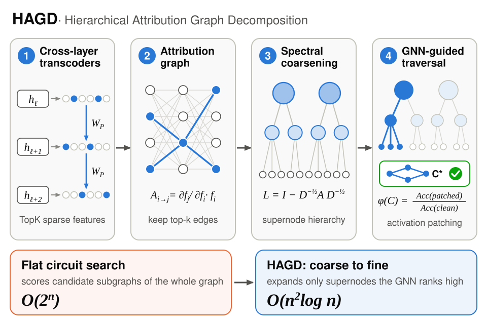
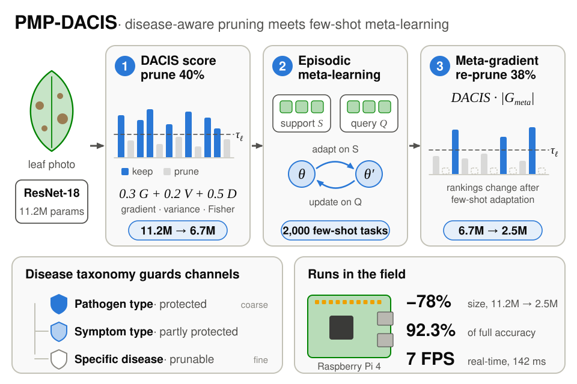

About Me
I am a researcher, builder and founder from Hyderabad, India. I completed my B.E. in Computer Science and Engineering in 2026 at Muffakham Jah College of Engineering and Technology, affiliated to Osmania University. I started billing clients for code at 17, during my diploma years. Since October 2026 I have worked as a Python Developer – ML Engineer at AI Logic Neural Network, on encoder-decoder translation models.
My work sits on three questions. What is a model actually computing? That is the circuit extraction work: pulling the small subgraph responsible for one behaviour out of a language model without searching the whole graph, and auditing whether the subgraph really carries the behaviour. What survives contact with real hardware? That is the compression and edge work: a disease detector small enough for a Raspberry Pi, an agent that pays for full precision only on the steps that need it. Does the system do what it claims? That is the verification work: whether a sepsis alert's explanation is true to the lab value it cites, and whether a multi-agent workflow still follows the instruction it started from.
First-author papers: circuit extraction in language models, disease-aware pruning that runs on a Raspberry Pi (under review at JMLR), and a pre-registered study of sepsis-alert explanations across 121 hospitals with Prof. Hamdi Al-Jamimi (manuscript). I also send fixes to open-source libraries such as TransformerLens, nnsight and HEPData, and I write up what I build and what breaks on my blog. If you work on interpretability, efficient deployment or verifying model behaviour, write to me at mohd.mudassiruddin7@gmail.com, or download my CV.
Research record: 4 papers · 4 citations · h-index 1 on Google Scholar.
I don’t build to ship. I build to understand. The shipping is just proof I understood.
Currently Working On
-
MatrAIx, the MIT/Harvard open-source persona simulation project — contributing to the Personas team on circuit-level attribution methods for persona-collapse detection.
-
Writing up a pre-registered test of sepsis-alert explanations with Prof. Hamdi Al-Jamimi (KFUPM): 45,246 alerts from a model trained at one hospital and applied to 121 hospitals in PhysioNet 2019, MIMIC-IV and eICU-CRD. Lactate citations reflected the lactate value in only 20–42% of alerts.
-
An Amazon Research Awards 2026 grant of AWS credits, as research collaborator with PI Dr. Fahmina Taranum: Trainium-Accelerated Intent Fidelity Checks for Multi-Agent Workflows, a gate that checks each planned tool call against the original instruction before it runs.
-
WISER, an IGSTC (Indo-German Science & Technology Centre) WISER Indo–German government-funded project, “AI-Enabled Scout Drone for Real-Time Pest Detection and Geotagging in Precision Agriculture,” as a Research Intern with Dr. Tasneem Bano Rehman (MJCET): contributing to data acquisition and working with multimodal data (RGB, thermal, LiDAR), with a particular focus on developing data and sensor fusion approaches for integrating information from multiple sensing modalities, and geotagging the most affected areas. Alongside it, a PRISMA 2020 systematic review of deep learning for rice disease detection (49 studies) and real-time person detection and tracking on a Livox Mid-360 LiDAR.
Open-Source Contributions
Bug fixes to libraries other researchers depend on, each with a test that fails on the old code: 29 pull requests since October 2026, 11 merged. What each one fixed.
Let’s Build Something That Matters
News
-
2026.11: Our proposal Trainium-Accelerated Intent Fidelity Checks for Multi-Agent Workflows received an Amazon Research Awards 2026 grant of AWS credits (PI Dr. Fahmina Taranum; I am the research collaborator).
-
2026.11: Finished the pre-registered sepsis study with Prof. Hamdi Al-Jamimi (KFUPM). Across 45,246 alerts and 121 hospitals, lactate citations reflected the lactate value in only 20–42% of alerts; removing measurement features raised value-faithful alerts from 63.1% to 95.4% at an AUROC cost of 0.013. Paper in preparation.
-
2026.11: Version 2 of our arXiv paper, now titled When Does a Stride-4 Prediction Level Help a Pretrained YOLOv10 on Drone Images? A stride-4 level grafted onto a pretrained YOLOv10 adds 1.68 test-dev AP at 640 pixels in every seed, and the gain disappears at 1280 pixels.
-
2026.10: Joined AI Logic Neural Network as a Python Developer – ML Engineer, working on encoder-decoder translation models.
-
2026.10: Started sending bug fixes to open-source libraries in machine learning, statistics and particle physics: twenty-nine pull requests so far, each with tests, eleven merged.
-
2026.09: Started a blog: short notes, month by month, on what I built, what broke and what I learned since December 2025.
-
2026.09: Selected for the Polaris Fellowship, one of ten selected nationwide out of 10,000+ applications.
-
2026.09: Joined the Erdős Institute Research Cohort 2026.
-
2026.08: Joined the IGSTC WISER Indo–German project as a Research Intern with Dr. Tasneem Bano Rehman (MJCET): multimodal drone data (RGB, thermal, LiDAR) and sensor fusion for pest detection in paddy.
-
2026.05: Began a visiting research collaboration with Prof. Hamdi Al-Jamimi (KFUPM) on verifying explanation faithfulness in sepsis clinical decision support.
-
2026.03: Earned the Claude Certified Architect – Foundations credential from Anthropic with a score of 944/1000.
-
2026.02: Built AI Chief of Staff in 36 hours at the Hack-Nation Global AI Hackathon with the MIT Sloan AI Club.
-
2025.12: Took part in Agentathon 2025, a Guinness World Record for the largest agentic AI hackathon, with 2,300+ developers building at once. I built fraud-detection agents for public-spending transparency.
Honors and Awards
-
2026 Amazon Research Awards — AWS credits for Trainium-Accelerated Intent Fidelity Checks for Multi-Agent Workflows, PI Dr. Fahmina Taranum, with me as research collaborator.
-
2025 Top 3 of 1,500+ teams, Google Agentathon 2025 — a multi-agent financial reasoning system backed by a Neo4j knowledge graph with versioned, contradiction-flagged decision records across 500+ nodes.
-
2025 Agentathon 2025 — the largest agentic AI hackathon ever held, 2,300+ developers building simultaneously (Guinness World Record).
-
2022–2026 Competed in 40+ hackathons, shipping real products under real pressure and genuine constraints.
Fellowships
-
2026 Polaris Fellowship — selected, one of ten nationally from 10,000+ applications.
-
2026 Erdős Institute Research Cohort — selected for the 2026 cohort.
Publications


Hierarchical Sparse Circuit Extraction from Billion-Parameter Language Models through Scalable Attribution Graph Decomposition
arXiv, 2026
, Shahnawaz Alam, Mohammed Kaif Pasha
[Project page] [arXiv] [Code]


Meta-Learning Guided Pruning for Few-Shot Plant Pathology on Edge Devices
arXiv, 2026 · under review at JMLR
, Shahnawaz Alam, Mohammed Kaif Pasha, Tasneem Bano Rehman, Fahmina Taranum, Afroze Begum
[Project page] [arXiv] [Code]

When Does a Stride-4 Prediction Level Help a Pretrained YOLOv10 on Drone Images?
arXiv, 2026
Quratulain Nayeem, Fahmina Taranum, , Sara Rizwan, Samia Areej
[Project page] [arXiv] [Code]

AgentCompress: Task-Aware Compression for Affordable Large Language Model Agents
arXiv, 2026
Zuhair Ahmed Khan Taha, , Shahnawaz Alam
[Project page] [arXiv] [Code]
Blog
Short notes, month by month, on what I built, what broke and what I learned. All 17 posts →
Aug 2026 I audited my own paper
Jul 2026 What our AgentCompress notebook shows, and what it doesn't
Mar 2026 Four pull requests to pyGAM, starting with the p-values
Research
Research Experience
-
2026 – Present Research Intern, Dr. Tasneem Bano Rehman, MJCET – IGSTC WISER Indo–German Government-Funded Project: “AI-Enabled Scout Drone for Real-Time Pest Detection and Geotagging in Precision Agriculture.” Contributing to data acquisition and working with multimodal data (RGB, thermal, LiDAR), with a particular focus on developing and exploring data and sensor fusion approaches for integrating information from multiple sensing modalities, so the project can geotag the parts of a field most affected by pests. With Dr. Rehman, Marina Tropmann-Frick (Hamburg University of Applied Sciences) and Mohammed Arshad, I co-wrote A PRISMA 2020 Systematic Review of Deep Learning Approaches for Paddy and Rice Disease Detection and Classification (manuscript): 1,471 records from seven sources, 112 full texts assessed, 49 studies appraised for dataset quality and reproducibility. Reported accuracies of 86.29–100% come from datasets and protocols that cannot be compared, and few studies release code. In progress: real-time person detection and tracking on a static Livox Mid-360 LiDAR, at 6.1 ms per 50 ms frame on a CPU, with 95% of boxes kept when noise at the sensor's own specification is added.
-
2026 – Present Visiting Research Collaborator, Prof. Hamdi Al-Jamimi, KFUPM — Do Sepsis Alerts Cite the Lab Value or the Lab Order? (manuscript). Sepsis alert tools show clinicians which findings drove an alert, but a lab result carries two signals: its value and the decision to order it. A per-alert verifier edits each cited lab twice, once on its value and once on its measurement record, and counts the citation as faithful only if normalising the value lowers the risk. Under a pre-registered protocol it audited 45,246 alerts from a model trained at one hospital and applied to 121 hospitals in PhysioNet 2019, MIMIC-IV and eICU-CRD. Lactate citations reflected the lactate value in only 20–42% of alerts, and 98–99% of the rest were driven by the measurement record. Removing measurement features raised value-faithful alerts from 63.1% to 95.4% at an AUROC cost of 0.013. Contrary to the pre-registered hypothesis, faithfulness did not fall at new hospitals even as AUROC fell from 0.846 to 0.732.
-
2024 – Present Research Collaborator, Dr. Fahmina Taranum, MJCET — research collaborator on the Amazon Research Awards 2026 grant (AWS credits) for Trainium-Accelerated Intent Fidelity Checks for Multi-Agent Workflows: a gate that checks each planned tool call in a multi-agent chain against the root instruction, projected into the agent role's action space, and blocks it before it runs, built as a fused NKI kernel on AWS Trainium. Co-author of the stride-4 YOLOv10 study on drone imagery.
-
2025 – 2026 Undergraduate Research, Dr. Tasneem Bano Rehman, MJCET — co-authored Meta-Learning Guided Pruning for Few-Shot Plant Pathology on Edge Devices (under review at JMLR). Dr. Rehman supervised the edge-deployment and few-shot methodology and contributed to the Raspberry Pi 4 experimental validation.
Research Grants and Proposals
-
2026 Amazon Research Awards (awarded, AWS credits) — Trainium-Accelerated Intent Fidelity Checks for Multi-Agent Workflows. In a multi-agent chain, a constraint in the user's instruction can be dropped or rewritten at an intermediate hop, and today's safeguards notice only after the tool has run. The proposal puts a fidelity gate before each tool call: it projects the root instruction into the acting agent's role subspace, scores the planned action against it, and blocks unsafe calls before they fire, as a fused NKI kernel on AWS Trainium, with an evaluation harness for AutoGen, ReAct and Bedrock Agents. PI Dr. Fahmina Taranum; I am the research collaborator.
-
2026 Indian Council of Social Science Research (ICSSR) (under review) — minor research project, ₹15 lakh budget, PI Dr. Fahmina Taranum.
Open Source
Each entry is one library: what was wrong, what I changed, and where the pull requests stand. Every fix comes with a test that fails on the old code (all pull requests).
-
2026.10 TransformerLens · 6 merged — In the TransformerBridge, cached hooks kept or dropped the batch dimension depending on the code path, alias names were missing from
get_caching_hooks, and a hook that returnedNonecrashedrun_with_hooks(#1862, #1864, #1865). I then wrote a parity check that compares the bridge with Hugging Face logits on tiny random models of each architecture. It found three more bugs, fixed in #1872–#1874: HunYuan applied QK-norm before RoPE, Cohere and Cohere2 used the wrong RoPE convention, and MPT never updated its KV cache, so cached generation drifted away from Hugging Face. -
2026.10 nnsight · merged — The text-generation pipeline left-padded encoder-decoder models, which shifted the logits of the short rows in a batch. Inputs are now padded on the right.
-
2026.10 HEPData · 3 merged — In hepdata-validator, a data file must now end in
.yamlor.json(#71), and every bin is checked for low ≤ value ≤ high on the original numbers, so integers above 253 stay exact (#72). In hepdata-converter, the YAML parser reads only the requested table (#71). -
2026.10 scikit-hep and zfit · hepstats merged, the rest in review — hepstats no longer profile-fits toys when no parameter is floating. In zfit,
RegularBinningfailed on size-one arrays under NumPy 2.4 (42 failing tests) and copying a PDF dropped its observable space. In cabinetry, fits with every parameter fixed crashed, and non-positive symmetrized normalisation effects were accepted. -
2026.10 skpro · 5 open — Scalar
ilocand parameters broadcast over rows or columns crashed (found by property tests over all 62 distributions),Hurdlereported a variance of 3 where the true value was 25.5, and the energy ofNormalMixtureignored the component means. skpro is one of the GC.OS projects in Google Summer of Code, so it is where I started for the 2027 round. -
2026.10 Flower, Hugging Face datasets, movement, BrainGlobe and Invenio · open — In Flower, adaptive clipping moved the clipping norm away from its target quantile. In datasets,
Dataset.shardraised on empty shards. In movement,cart2polturned x-y-z data into polar coordinates that matched neither the plane nor the point. In BrainGlobe, interrupting an atlas download with Ctrl+C left an atlas that could not be opened or downloaded again. In invenio-records, a migration failed when a versioning table did not exist. -
2026.03 pyGAM · 4 open — p-values and effective degrees of freedom computed with Wood's (2013) rank-r truncated eigendecomposition, overflow in link functions and wrong weights in distributions, and restoring the scikit-learn estimator contract.
-
2026.02 pgmpy · 11 pull requests, three still open — fixes to the Python library for probabilistic graphical models and causal inference: a rewrite of
minimal_dseparatoron the moralized ancestral graph, state names lost onfit, keyword arguments dropped byquery, a NaN average treatment effect on empty adjustment sets,ApproxInferencebuilding its state space from samples instead of the model, and UAI round-trips losing variable names.
Experience
-
2026.10 – Present Python Developer – ML Engineer, AI Logic Neural Network — encoder-decoder translation models and the text datasets they train on (collection with Selenium and BeautifulSoup, regex cleaning), served through FastAPI, with backend components in Go.
-
2022.12 – 2023.05 Machine Learning Engineer, RentEra — refined production ML models on real-estate rental data through feature engineering and algorithm tuning, reducing live inference error on user-facing systems. Where I learned exactly where the gap between a backtested model and a deployed one lives.
-
2022.05 – 2022.11 Junior ML Engineer, Techieyan Technologies, Hyderabad — structured exploratory data analysis and statistically validated experiments that surfaced the feature signals behind product decisions. First production ML role, started during the diploma.
Hackathons
40+ hackathons. Real products built under real pressure. Only the ones worth telling.
-
2026.02 Hack-Nation Global AI Hackathon, with the MIT Sloan AI Club (36 hours). Built AI Chief of Staff, organizational intelligence that maps real-time knowledge flow across teams. The RAG pipeline crashed at hour 22, was rebuilt by hour 26, and shipped at hour 36.
-
2025.12 Agentathon 2025, Malla Reddy University (2,300+ developers, Guinness World Record). Built fraud-detection agents for public-spending transparency. The record was a bonus; the lesson was humility.
-
2025.12 ElevenLabs Worldwide Hackathon, at NxtWave (Voice AI). Built a “Netflix of corporate training”: upload a PDF and get back bite-sized, AI-narrated video episodes.
-
2025.11 IBM watsonx Orchestrate Hackathon, LLM Security Track. Built Guardian-AI, a constitutional AI security layer for LLMs in SOC environments. The adversarial cases we didn’t think of were the ones that mattered most.
-
2025.01 #7Days7Builds Challenge, built in public. Seven deep CS projects in seven days: a BitTorrent client, a blockchain in C#, a 3D engine from scratch, and semantic code search.
Education
-
2023 – 2026 B.E. in Computer Science and Engineering, Muffakham Jah College of Engineering and Technology (affiliated to Osmania University), Hyderabad. CGPA 7.99/10, with a final-year focus on AI systems, distributed computing and machine learning theory. Joined in the second year after the diploma.
-
2020 – 2023 Diploma in Computer Science, State Board of Technical Education and Training (SBTET), Telangana. 80% grade; started freelancing and billing clients for code at 17.
Ventures
-
2026 – Present Stealth: Indian AI Dataset Infrastructure (In Progress). India has 1.4 billion people and almost no representative AI training data for its regional languages, healthcare, legal, agriculture, and cultural domains. I am building collaborative AI agents that structure these missing datasets natively on TPU clusters.
-
2025 Auragenzy — founder and research head. I led the team's technical and research work on an AI SaaS for no-code workflow automation: the agent orchestration and evaluation stack, the internal research that decided what to build, and the parts of the model tooling we open-sourced. Real paying users within months of launch.
-
2022 Brevenia — social media growth agency, co-founded at 17. Zero funding, cold outreach, first payroll.
Certifications
-
2026 Claude Certified Architect – Foundations, Anthropic (score 944/1000)
-
2026 Claude Certified Architect – Early Adopter, Anthropic
-
2026 Neo4j Graph Data Science Certification, and Neo4j and Generative AI (LLM Fundamentals), Neo4j GraphAcademy
-
2026 CS50x, Harvard University
-
2023 Neural Networks and Deep Learning, and TensorFlow for AI, ML and Deep Learning, DeepLearning.AI
-
2023 Data Science Professional Certificate, and Statistics for Data Science with Python, IBM
-
2023 SQL for Data Science, and Fundamentals of Visualization with Tableau, UC Davis
-
2023 Preparing Data for Analysis with Microsoft Excel, Microsoft
-
2023 IT Automation with Python Professional Certificate, Google
Others
Recommendation Letters
-
Recommendation letter from Dr. Tasneem Bano Rehman, Assistant Professor, Department of Computer Science and Engineering, Muffakham Jah College of Engineering and Technology (MJCET), Osmania University.
-
Recommendation letter from Dr. Fahmina Taranum, Professor, Department of Computer Science and Engineering, Muffakham Jah College of Engineering and Technology (MJCET), Osmania University.
-
Recommendation letter from Prof. Hamdi Al-Jamimi, Associate Professor, Department of Computer Engineering, King Fahd University of Petroleum and Minerals (KFUPM), Saudi Arabia.
Mission & Community
-
I build in the open: 60+ public repositories on GitHub, and an organic community of about 16k on LinkedIn.
Mentors & Collaborators
The supervisors, mentors and collaborators behind the work:
-
Dr. Fahmina Taranum (MJCET, Osmania University) — my primary supervisor through undergrad, PI on the Amazon Research Awards grant, co-author on the stride-4 YOLOv10 study and the plant pathology work.
-
Dr. Tasneem Bano Rehman (MJCET) — supervises my WISER work; the edge deployment and few-shot methodology on the plant pathology paper, and corresponding author of the PRISMA review.
-
Prof. Hamdi Al-Jamimi (KFUPM) — supervises the sepsis explanation-faithfulness work.
-
Marina Tropmann-Frick (Hamburg University of Applied Sciences) — co-author on the PRISMA review.